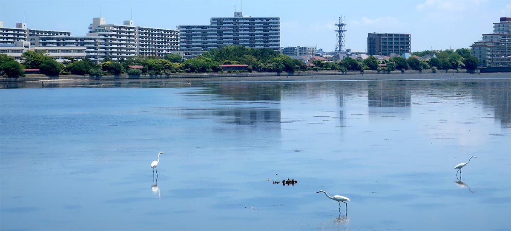
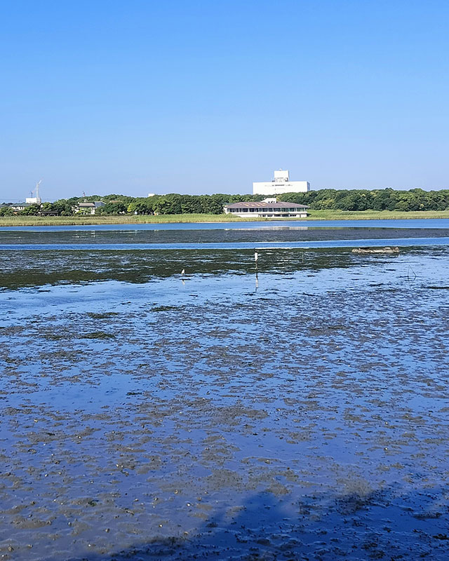

都会に残された、身近で貴重な自然

谷津干潟は、千葉県習志野市にある、東京湾の奥に残された干潟です。周囲を住宅地や道路に囲まれながらも、潮の満ち引きがあり、多様な生きものが暮らしています。
満潮時には水面が広がり、干潮時には泥の地面が姿を現します。そこにはカニやゴカイ、貝類などの小さな生きものがすみ、それらを求めて多くの野鳥が訪れます。都市の中にありながら、生きもの同士のつながりを間近に感じられることが、谷津干潟の大きな魅力です。
谷津干潟は、国際的にも重要な湿地として、1993年にラムサール条約に登録されました。身近な散策地でありながら、世界につながる自然環境でもあります。
渡り鳥たちが羽を休める場所
谷津干潟は、渡り鳥にとって大切な中継地であり、越冬地でもあります。春や秋には渡りの途中のシギ・チドリ類が立ち寄り、冬には多くのカモ類が見られます。
遠くの繁殖地や越冬地を行き来する鳥たちにとって、旅の途中で休み、餌をとることができる干潟は欠かせない場所です。谷津干潟では、泥の中の小さな生きものを探す鳥の姿や、水辺で休む群れの様子を観察することができます。
季節や時間帯によって見られる鳥や景色が変わるため、訪れるたびに違った表情に出会えるのも魅力です。
都市で自然を学べる場所
谷津干潟は、野鳥や生きものを観察するだけでなく、自然について学べる場所でもあります。谷津干潟自然観察センターでは、干潟の生きものや環境について知ることができる展示のほか、観察会やガイドツアーなども行われています。
子どもにとっては、身近な自然にふれながら生きものや環境への関心を育てるきっかけになります。大人にとっても、日常の中で少し足を止め、季節の変化や水辺の生きものに目を向ける時間は、心を落ち着けてくれるものです。
谷津干潟は、都市の中に残された貴重な自然です。訪れる人がその魅力を知り、自然との関わり方を少しずつ考えていくことが、この場所を未来へつなぐ一歩になります。
